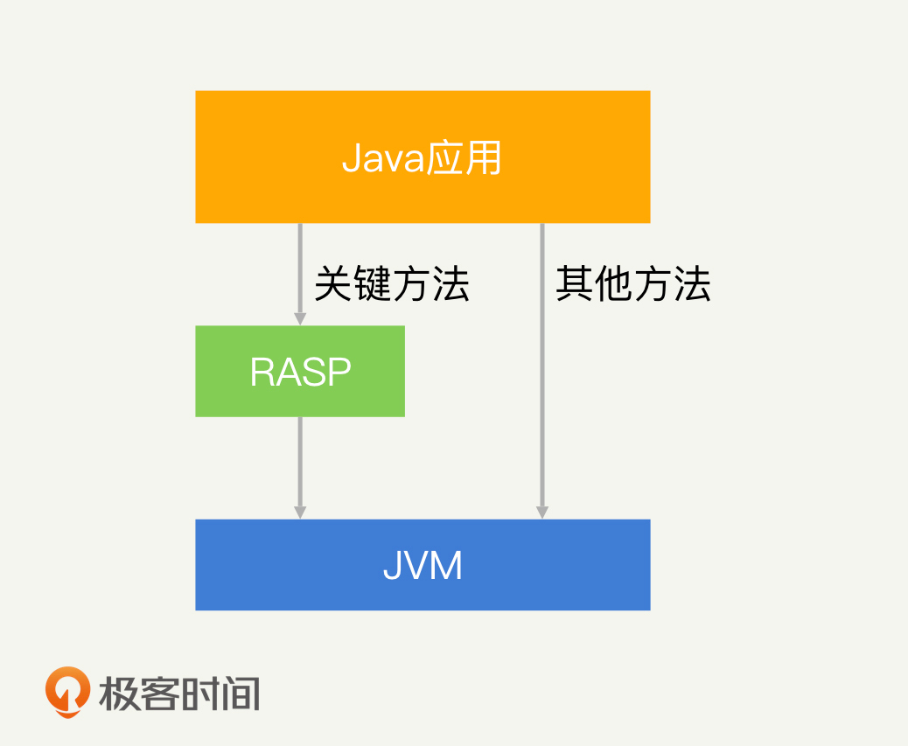
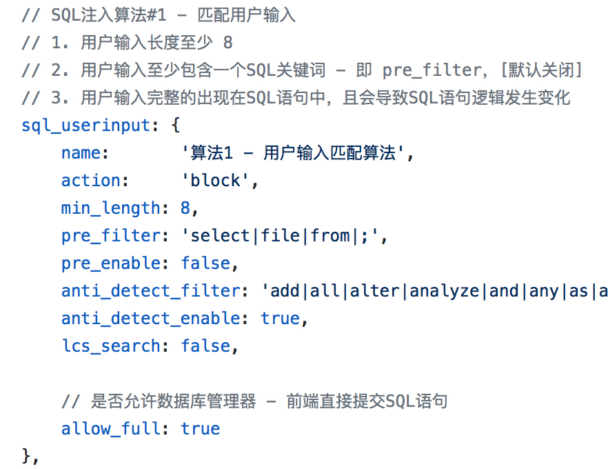
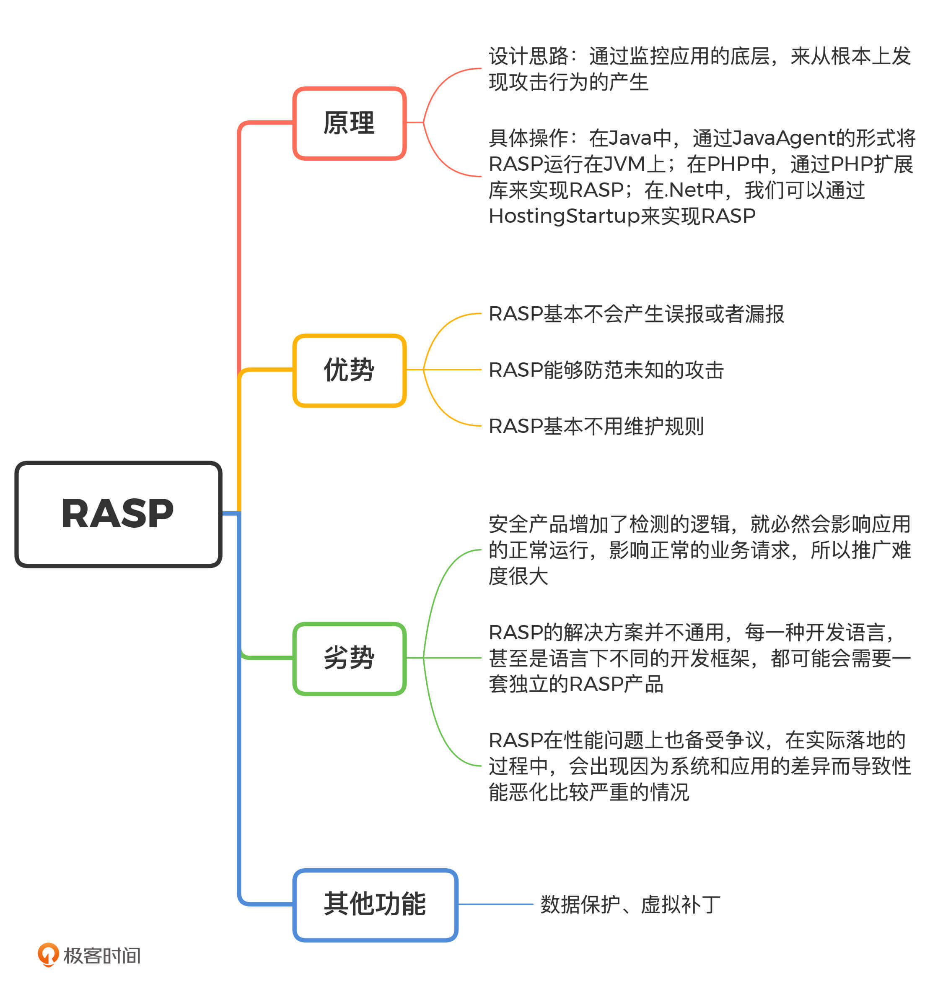

- 00 开篇词 别说你没被安全困扰过.md.html
- 01 安全的本质：数据被窃取后，你能意识到问题来源吗？.md.html
- 02 安全原则：我们应该如何上手解决安全问题？.md.html
- 03 密码学基础：如何让你的密码变得“不可见”？.md.html
- 04 身份认证：除了账号密码，我们还能怎么做身份认证？.md.html
- 05 访问控制：如何选取一个合适的数据保护方案？.md.html
- 06 XSS：当你“被发送”了一条微博时，到底发生了什么？.md.html
- 07 SQL注入：明明设置了强密码，为什么还会被别人登录？.md.html
- 08 CSRF_SSRF：为什么避免了XSS，还是“被发送”了一条微博？.md.html
- 09 反序列化漏洞：使用了编译型语言，为什么还是会被注入？.md.html
- 10 信息泄露：为什么黑客会知道你的代码逻辑？.md.html
- 11 插件漏洞：我的代码看起来很安全，为什么还会出现漏洞？.md.html
- 13 Linux系统安全：多人共用服务器，如何防止别人干“坏事”？.md.html
- 14 网络安全：和别人共用Wi-Fi时，你的信息会被窃取吗？.md.html
- 15 Docker安全：在虚拟的环境中，就不用考虑安全了吗？.md.html
- 16 数据库安全：数据库中的数据是如何被黑客拖取的？.md.html
- 17 分布式安全：上百个分布式节点，不会出现“内奸”吗？.md.html
- 18 安全标准和框架：怎样依“葫芦”画出好“瓢”？.md.html
- 19 防火墙：如何和黑客“划清界限”？.md.html
- 20 WAF：如何为漏洞百出的Web应用保驾护航？.md.html
- 21 IDS：当黑客绕过了防火墙，你该如何发现？.md.html
- 22 RASP：写规则写得烦了？尝试一下更底层的IDS.md.html
- 23 SIEM：一个人管理好几个安全工具，如何高效运营？.md.html
- 24 SDL：怎样才能写出更“安全”的代码？.md.html
- 25 业务安全体系：对比基础安全，业务安全有哪些不同？.md.html
- 26 产品安全方案：如何降低业务对黑灰产的诱惑？.md.html
- 27 风控系统：如何从海量业务数据中，挖掘黑灰产？.md.html
- 28 机器学习：如何教会机器识别黑灰产？.md.html
- 29 设备指纹：面对各种虚拟设备，如何进行对抗？.md.html
- 30 安全运营：“黑灰产”打了又来，如何正确处置？.md.html
- 加餐1 数据安全：如何防止内部员工泄露商业机密？.md.html
- 加餐2 前端安全：如何打造一个可信的前端环境？.md.html
- 加餐3 职业发展：应聘安全工程师，我需要注意什么？.md.html
- 加餐4 个人成长：学习安全，哪些资源我必须要知道？.md.html
- 加餐5 安全新技术：IoT、IPv6、区块链中的安全新问题.md.html
- 模块串讲（一）Web安全：如何评估用户数据和资产数据面临的威胁？.md.html
- 模块串讲（三）安全防御工具：如何选择和规划公司的安全防御体系？.md.html
- 模块串讲（二）Linux系统和应用安全：如何大范围提高平台安全性？.md.html
- 结束语 在与黑客的战役中，我们都是盟友！.md.html
- 捐赠
22 RASP：写规则写得烦了？尝试一下更底层的IDS
你好，我是何为舟。
在前面的课程中，我们已经介绍了防火墙、WAF和入侵检测。这些产品都有一个共同的特性，就是基于网络请求或者系统行为对攻击的特征进行检测，然后再采取相应的防控手段。这些安全产品基本都和应用本身解耦。也就是说，基本上我们不需要对应用做任何开发和改动，就能够部署这些安全产品。
尽管解耦在部署上能够节省很大的成本，但解耦同样意味着，安全产品和应用本身是通过接口、请求等形式来进行数据交换的。换一句话说，安全产品只能够看到应用输入和输出的数据，并不知道数据在应用内的流动情况。因此，这种工作模式不可避免会产生一定的误判和漏报。
我们来看一个关于WAF检测SQL注入的例子。下面是请求代码：
http://server.com/login?username=test&password=" or ""="
WAF可能会检测到password参数中的SQL注入痕迹进行拦截。如果应用采用的是安全的PreparedStatement方法，那这个SQL注入就不会生效，也就不需要拦截。但是WAF和应用解耦，让WAF不知道应用的逻辑，从而产生了误报。
所以，对于任何安全产品来说，能获取到的数据和信息越多，检测的能力就越强，误判和漏报的概率也就越低。因此，2012年，Gartner提出了RASP（Runtime Application Self Protection）的概念，就是希望将安全产品部署在应用的底层，完全站在应用的视角去发现攻击行为，从而实现更加完善的安全防护。
RASP的原理
想要利用RASP实现更完善的安全防护，首先我们要知道，什么是RASP？以及如何实现RASP？
RASP的设计思路是通过监控应用的底层，来从根本上发现攻击行为的产生。
以Java为例，Java应用运行在JVM之上。因此，JVM就是一个底层，它能够看到所有的应用信息。我们可以通过JavaAgent的形式将RASP运行在JVM上，然后借助Instrumentation技术Hook关键的类和方法。关键类和方法具体有哪些，你可以参照OpenRASP的Hook列表。这样一来，RASP就能关注到应用安全相关的信息和调用了。- 
同样的原理，在PHP中，我们可以通过PHP扩展库来实现RASP；在.Net中，我们可以通过HostingStartup来实现RASP。
如果你想要研究RASP产品，那我推荐你使用百度的OpenRASP。因为OpenRASP在开源市场中认可度比较高，也是目前各个公司用来研究RASP产品的一个主要对象。
RASP的优势和劣势
我们经常会将RASP和WAF拿来做比较，因为它们主要关注的都是应用相关的Web安全问题。那么对比WAF，RASP有哪些优势和劣势呢？
首先我们来看优势。在开头我们就提到了，RASP对比于WAF最大的优势在于RASP运行在应用的底层，从而能够知道应用运行时的上下文（比如：用户、代码逻辑、SQL语句等）。在Web安全中，我们针对Web安全的攻击原理进行过总结：SQL注入、反序列化等漏洞其实都是通过输入数据，篡改应用的正常逻辑实现的攻击。
对于WAF来说，它只能够判断出输入的数据“可能”会篡改应用的正常逻辑，因此WAF的拦截决策都来源于这个可能性。而对于RASP来说，它知道应用的正常逻辑是什么，也知道应用接收输入后实际的逻辑是什么，如果实际逻辑和正常逻辑不一致，就必然发生了攻击。基于这种检测方式，RASP基本不会产生误报或者漏报。
我们以OpenRASP防止SQL注入的检测逻辑为例，来看一下RASP是如何进行检测的。算法描述如下：- - 第1步和第2步很好理解，都是SQL注入的基本特征。那第3步中的“导致SQL语句逻辑发生变化”，OpenRASP要如何去识别呢？假设用户的输入是万能密码”or”“=“，那么，应用实际执行的SQL语句就是：
SELECT * FROM Users WHERE Username = “” AND Password = ““or””=””
在这个SQL语句中，最后的几个字符都是用户的输入。为了检测语句逻辑的变化，OpenRASP将这个SQL语句进行了Token化。所谓“Token化”，就是对SQL语句中的关键词进行拆解，拆解后分别是：SELECT、 *、FROM、Users、WHER、Username、=、”“、AND、Password、=、”“、or、”“、=、”“。我们能够清楚地看到，用户的输入“”“or “”=”””占据了5个Token。而正常情况下，用户的输入应该只占据1个Token。因此，只要用户的输入大于1个Token，就说明SQL语句逻辑存在变化，我们就可以断定存在SQL注入了。
其次，RASP能够防范未知的攻击。对于SQL注入来说，它的注入点可以是某个GET参数、某个POST的Body、某个Header字段等，具体的攻击方式也多种多样：盲注、基于Insert的注入等。
WAF的检测规则是一个一个去覆盖这些攻击点和攻击方式。如果黑客发现了某个新的攻击点或者使用了新的攻击方式，WAF根本无法检测出来。
对于RASP来说，它实际上不关注具体的攻击点和攻击方式是什么，因为SQL注入攻击，最终都会使SQL语句Token化后的长度发生改变。因此，RASP只需要判断执行的SQL语句Token化后的长度即可。所以我才说，RASP能够有效地防御未知的攻击。
最后，我认为RASP还有一个比较特别的好处，就是基本不用维护规则。我前面讲过的各类安全产品：防火墙、WAF和入侵检测，它们的本质都是检测攻击行为。而这些安全产品的检测方式不论是签名匹配、正则匹配还是行为分析，都包含了大量的规则和算法。这些规则和算法带来的最大问题，就是针对每一家公司我们都需要制定一套单独的规则和算法。因为每家公司的应用和网络环境都不一样，面临的攻击也不一样。
随着公司的发展以及黑客的对抗升级，我们还需要不停地更新和维护这套规则和算法，这就带来了极大的运营成本。而对于RASP来说，它当然也需要规则和算法来支持，但是它的规则和算法相对统一。
比如，在Java中，不论你是使用的哪种开发框架，最终执行SQL语句的都是底层的JDBC插件，在这个层次上，攻击的特征都是一致的。因此，RASP基本只需要维护一套统一的规则和策略，就能够适用于所有的公司和应用了。所以，百度在OpenRASP覆盖面说明中敢说“若发现不能拦截的攻击或者误报的情况，请联系我们”，就是这个原因。开源的WAF只会提供一个维护规则的入口，而不会帮助你进行维护。
尽管RASP存在许多明显的优势，但是目前来看，国内对于RASP的实际落地，普遍还在试验阶段，我很少见到RASP在公司范围内大规模推广落地案例。这是为什么呢？要搞清楚这个问题，就不得不提到RASP的劣势了。RASP的劣势主要有三方面，下面，我们一一来看。
我认为最大的劣势在于推广难度上。尽管我们一直在提安全，但是事实上，大部分的开发人员并不认可安全，他们也不接受任何可能对应用产生影响的安全产品。这是因为，这些安全产品增加了检测的逻辑，就必然会影响应用的正常运行。而且，WAF等拦截性安全产品产生的误报，会让正常的业务请求受到影响。
但是，防火墙、WAF和入侵检测，实际上都已经在各个公司很好地落地了。我认为这都归功于安全人员或者运维人员的“强推”。
在部署一款WAF的过程中，实际上是不需要开发人员参与的，运维人员在网关上直接部署就可以了。而RASP不一样，RASP和应用强耦合，它需要由开发人员去部署。比如，Java中需要通过命令java -javaagent:rasp.jar -jar app.jar来启动RASP，其中的参数javaagent只能由开发人员进行配置。因此，RASP的推广实际上是安全意识的推广，所以难度也比较高。
其次，RASP的解决方案并不通用。从语言支持上来看，目前RASP只在Java、PHP和.Net语言中具备成熟的产品。其他高级语言，如Python等，可能是因为没有很好的Hook方案，所以目前仍然局限于研究阶段。这也是RASP强耦合所带来的弊端：每一种开发语言，甚至是语言下不同的开发框架，都可能会需要一套独立的RASP产品。而WAF等安全产品，因为网络和系统都比较统一，则不受此限制。
最后，RASP在性能问题上也备受争议。尽管目前成熟的RASP产品宣称它的性能影响已经低于5%，甚至更低了，但在实际落地的过程中，确实会出现因为系统和应用的差异，而导致性能恶化比较严重的情况。这也是RASP在兼容性不足上所表现出来的缺陷。
RASP的其他功能
除了针对应用的攻击行为进行检测和拦截，和WAF一样，RASP也能够提供很多额外的安全防护功能。
毫不夸张地说，WAF能实现的功能，RASP都能够实现。因此，WAF中的数据保护、虚拟补丁等功能，RASP也都能够提供，原理也是一致的：都是通过拦截并修改HTTP请求和响应，在HTTP内容中加入额外的安全特性，比如Cookie加密。
除此之外，因为RASP部署于应用的底层，知道应用的全部信息，所以它本身可以对应用的安全性进行评估。最简单的评估问题如下：
- 是否使用ROOT权限运行了应用；
- 在连接数据库的时候，是否使用了弱密码；
- 使用了哪些插件，插件是否包含漏洞。
RASP可以在应用运行的过程中对这些高危的进程操作进行检测，从而提醒你采取更安全的实现方式。
总结
好了，今天的内容差不多了，我们一起来总结一下，你需要掌握的重点内容。
RASP的功能确实能给应用的安全性带来一个质的提升。对比低耦合的WAF等安全产品，RASP的准确率、覆盖度都有较大优势。但是，正因为耦合度过高，RASP部署起来比较麻烦，实际推广落地的时候，经常出现开发人员不配合的情况。总的来说，推广的难度属于管理上的问题，需要你想办法说服开发人员。单纯从安全角度上来说，我认为RASP是一款提升应用安全性的最佳安全产品。
另外，我认为在实际工作中，我们也可以将RASP和其他安全产品进行适当 组合，以达到取长补短的目的。比如说，RASP推广比较难，我们可以只做局部的部署。这些局部的部署可以当作WAF的样本数据来源，只要RASP在底层发现了攻击行为，就将相应的表层特征输出到WAF。这样一来，我们就可以将RASP在局部上的防御能力拓展到整体的WAF上，从而实现全面的安全防护提升。- 
思考题
最后，给你留一道思考题。
在这一讲中，我们只是以SQL注入为例，讲述了RASP是如何进行攻击检测的。你可以思考一下，对于其他的攻击方式，如反序列化漏洞、命令执行和SSRF等，RASP又该如何防护呢？你可以先学习一下OpenRASP的说明文档，之后再来思考这个问题。
欢迎留言和我分享你的思考和疑惑，也欢迎你把文章分享给你的朋友。我们下一讲再见！
© 2019 - 2023 Liangliang Lee. Powered by gin and hexo-theme-book.